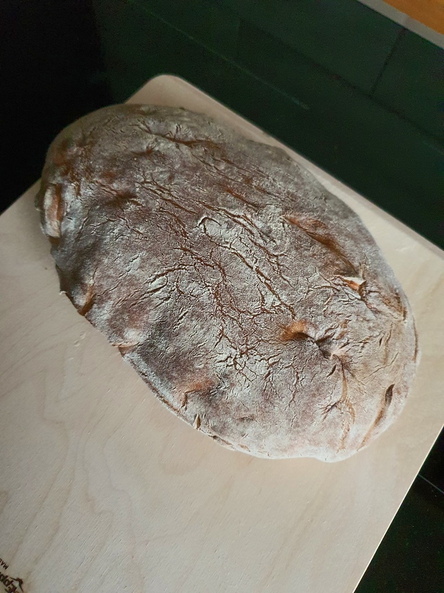

Skład:
- 1 kg mąki (pszenna, żytnia, mieszanka);
- woda;
- 2 płaskie łyżki soli;
- 1 płaska łyżka cukru;
- 1 opakowanie drożdży;
- 4 łyżki oleju/oliwy z oliwek.
Przygotowanie:
Mąkę przesiać w celu napowietrzenia i wrzucić do miski. Przyprawić solą. W szklance rozrobić wodę z cukrem i odrobiną soli, dodać drożdży. Wlać przygotowany dekokt do mąki i dodać oliwy. Wyrobić ciasto i odstawić na 2-4h przykryte wilgotną szmatką. Wypiekać w piekarniku przez 1-1,5h przy temperaturze 180 stopni celciusza.
Zdjęcia:
